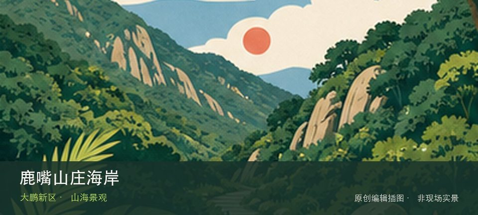

适合谁
适合海岸观察、轻量步行和愿意服从海况边界的人；不适合追逐未开放穿越线。

SHENZHEN GUIDE · 286
杨梅坑东侧 · 山海景观
官方A级旅游景区名录将东山鹿嘴旅游区列为大鹏新区南澳街道东山社区新东路；本页沿用游客更常用的“鹿嘴山庄海岸”名称，聚焦杨梅坑东端的海岸与山海步道，避免重复建同一目的地。悬崖海岸、山海步道和度假运营空间位于道路末端，接驳、边坡和风浪使到达比普通滨海公园更受限制。现场不必追求一次走完，先在悬崖海岸与山海步道之间确定主线，再按体力、日照和天气保留折返方案。山地、滨水或林下路面会随降雨改变，当天预警和开放边界始终比旧轨迹更优先。
WHY GO
适合海岸观察、轻量步行和愿意服从海况边界的人；不适合追逐未开放穿越线。
确认道路和接驳开放后再出发，只走公开观景段；遇边坡封闭、大浪或雷雨不靠近崖边，也不沿旧路绕行。
公共交通先到杨梅坑东端片区，再以鹿嘴山庄海岸公开参观入口为终点；多入口地点须按计划游线选择入口，并预先锁定返程站点。
自驾只使用鹿嘴山庄海岸官方或片区正规停车场；海滨旺季先查预约、限行和接驳，满位后不要在村道或应急通道等候。
10 月至次年 4 月体感较舒适；夏季亲水先查海况，雷暴、台风影响或大浪提示下不靠近水线。
NEARBY IDEAS